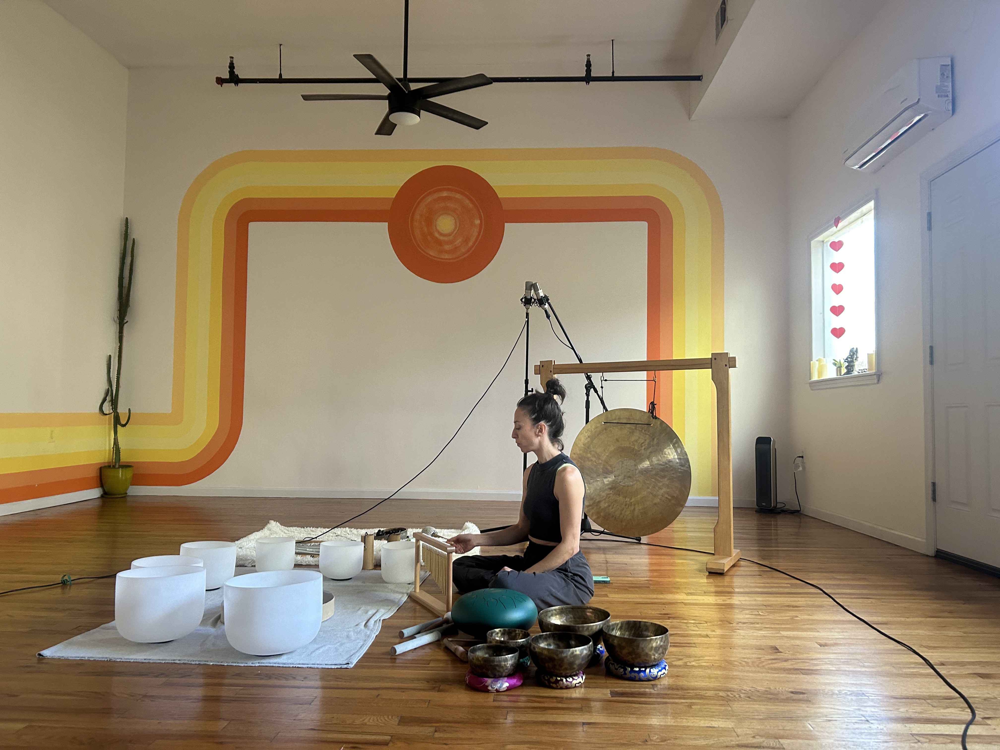
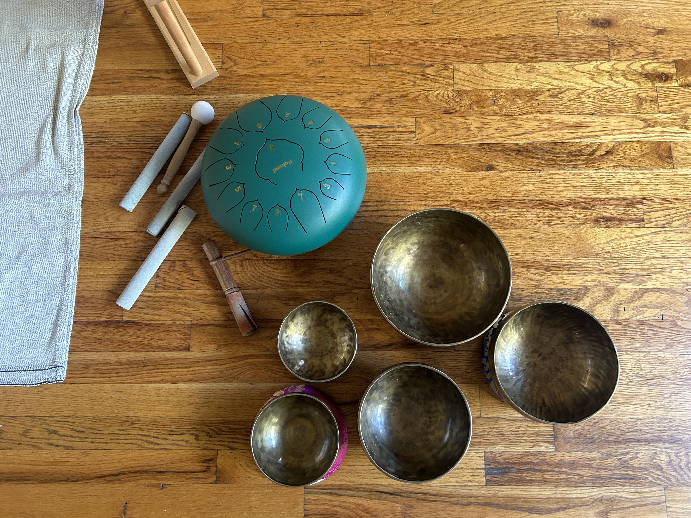
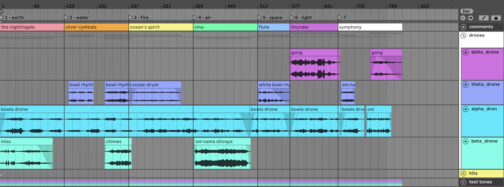
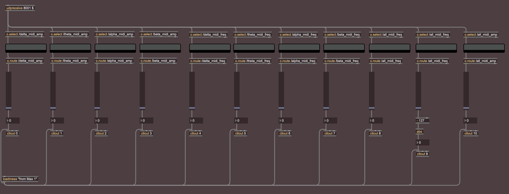
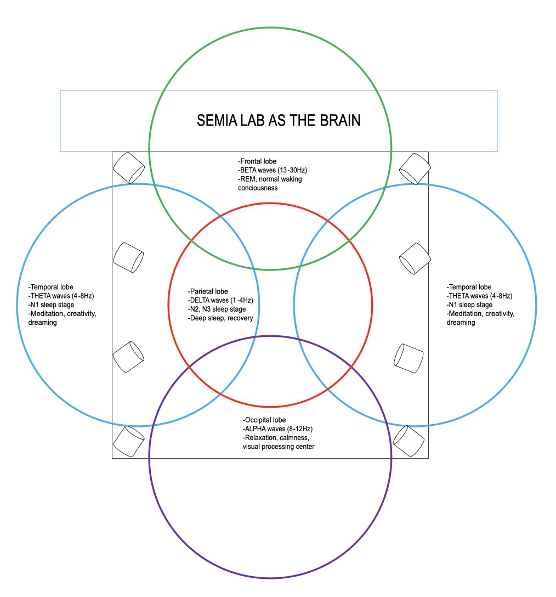
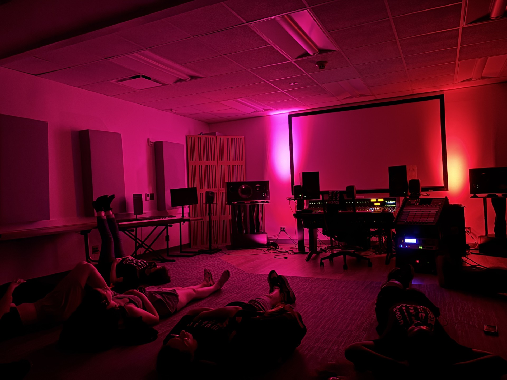

Dr. Teresa Nakra, faculty advisor
The School of Humanities, Arts, and Social Sciences
Stevens Institute of Technology
Abstract
Simulating the Internal Sacred Sound
is an auditory-vibrational experience that introduces the audience to a meditative sound installation. The project assigns electroencephalogram (EEG) data to MIDI parameters in real-time; software interprets MIDI data from a structured meditation period to trigger pre-recorded musical elements, “translating” the internal experience into the physical world. Brain wave data is filtered into four categories (beta, alpha, theta, and delta waves) that are mapped to symbolic musical effects based on specific characteristics such as attention, relaxation, and mental interiorization, driven by a single meditator.
The purpose of this project is to use electrophysiology as a medium to paint a picture of the internal sacred sounds – the subtle sounds of the astral body and cosmic vibration - utilizing the brain as paint, the EEG and network programming as the paintbrush, and surround-sound speakers as the canvas. In this project, electrical signals of the brain, trained and directed by scientific meditation, influence musical effects, creating a neurofeedback loop for immersive meditation. With deepest reverence to Yoga, the ancient metaphysical system of which this simulation is guided, this project will work to bridge the divide between planes of consciousness and demonstrate the synergism between science and spirituality.
Introduction
In late January 2025 I very briefly heard the sounds of the muladhara
(the earth center at the base of the spine), and the svadhisthana (the
water center of the sacrum). Later that night, I described it in my
notebook:
“Perfectly still with calmness of breath (OM Peace Amen) / Breathing
in the light of ether and exhaling misinterpretation / The first sound
awakens gently. Flickering candle suspended – the plume of incense smoke
softly rising / Subtle vibrating motion around the golden bowl, slowly,
scraping / A resonance unfolding. Merge with it – the voice of
repetition. Steady now / The second sound is on a wholly different
vibrational rate. Snowy, bright blue twinkling like icicle wind chimes
in a cosmic breeze / Listen in the right ear, the positive receiving
side of the body. Listen closely, further in, further in – words are
just too smudgy now! I’m writing all over it, 1000 ‘its’ in this single
pencil stroke. 1000 astral flutes sing their perfect chord – So the
Cosmic Bard plays the Song of the Lord.”
The sounds were incredibly subtle, delicate, and easily banished by a
single restless thought. I can’t recreate the sounds with instruments,
in words, or in my head – but they are present in my consciousness
nonetheless. Here are some more examples:
In “I Heard Whales (I Think)” by Mount Eerie, Phil Elverum describes
the sound of “the real thing”:
“Walking slowly back and forth / On a bluff along the water / Seeing
waves roll in the blowing / Far from any other person / I swear / I
promise / I heard, I did / I heard actual music riding on the wind /
Barely there / Though it couldn’t have been/ ’Cause I was definitely
miles from any other people / And crashing water in my ears eclipsed
everything / It sounded like… It could’ve been whales / Deep, watching,
doing their singing / It could’ve been some ancient shipwreck / Still
out there howling / Or it could’ve been science / Just wind and waves
and rocks and angles / Or my hallucination could have been / The real
thing / Something with no explanation / Heard, or not heard, inside of
everything / And there is music no one hears / Unless they quiet all the
way down / And
lean way out over the edge“
Russian mystic Madame Blavatsky described the seven sacred sounds as
such:
“The first is like the nightingale’s sweet voice, chanting a parting
song to its mate. The next resembles the sound of silver cymbals of the
Dhyanis, awakening the twinkling stars. It is followed by the plain
melodies of the ocean’s spirit imprisoned in a conch shell, which in
turn gives place to the chant of Vina. The melodious flute-like symphony
is then heard. It changes into a trumpet blast, vibrating like the dull
rumbling of a thunder cloud. The seventh swallows all other sounds. They
die and then are heard no more.”
This project came into being in Fall 2024 as a side-effect of my
deepening meditation practice and desire to hear the cosmic sound of
Aum. I devised a plan for my thesis which would enable me to spend as
much time as possible dedicated to training my mind in one-pointed
concentration to achieve this goal. I committed myself to daily practice
of the meditation techniques taught by Paramahansa Yogananda in the
Self-Realization Fellowship Lessons, which have been an invaluable guide
in this project and in this life. Other helpful guides have been found
in Swami Sri Yukteswar’s The Holy Science and The Yoga Sutras of
Patanjali. Interested readers will find great inspiration in Yogananda’s
Autobiography of a Yogi.
Om Kriya Babaji Namaha!
This project and everything I do is dedicated to Babaji and the
Gurus.
Electrophysiology
Electrophysiology is a branch of physiology pertaining to the electrical recording techniques and measurements of biological properties in the nervous system. One common modality of this study is the evaluation of brain activity known as electroencephalography (EEG). In this study, neural oscillations of the brain are recorded with electrodes placed along the scalp and measured as voltage fluctuations. EEG is an area of active research, and the understanding of brain activity is still in development.
An EEG displays patterns of electrical activity with an approximate range of frequencies between 1 and 30 cycles per second (Hz) and an approximate range of amplitudes between 1 and 100 microvolts (μV). These frequencies are divided into four main groups:
Beta waves: neural oscillations in the frequency range of 12-30Hz.
Alpha waves: neural oscillations in the frequency range of 8-12Hz.
Theta waves: neural oscillations in the frequency range of 4-8Hz.
Delta waves: neural oscillations in the frequency range of 1-4Hz.
Each group of neural oscillations are commonly associated with different states of consciousness and brain activity such as:
Beta waves are associated with alertness and wakefulness, most common in normal waking consciousness.
Alpha waves are associated with relaxation and calmness.
Theta waves are associated with deep relaxation, creativity, and dreaming.
Delta waves, the longest and slowest, are associated with deep sleep and unconsciousness.
g.Tec
Analysis of the brain’s electrical signals requires the use of a Brain Computer Interface (BCI). I had the wonderful opportunity to experiment with the g.Tec BCI system for this project. Following is a quick walk-through of the system’s various functions and capabilities.
The first step is a biosignal amplifier which connects via USB to the computer for software interaction. The amplifier communicates with a wireless EEG system for signal processing, in this case the g.Nautilus Research Wearable EEG Headset: a 32-channel wireless EEG which uses gel-based EEG electrodes. The g.Tec Active Electrode System uses active gel-based electrodes (g.SCARABEO Active Electrodes) with a small form factor to support high-density recordings.
For software components, g.Tec’s BCI environment makes use of the High-Speed Online Processing environment in Simulink for real-time signal acquisition. The device driver provides access to sampling frequency, digital I/O, bandpass and notch filtering, visualization, and file storage, detailed further in the programming section below.
Programming
The technical aspects of this project are three-fold.
1. EEG & Matlab
2. Python
3. Max & Ableton
The sections below describe each of these components in detail.
EEG and Matlab
The g.Tec software package includes plenty of helpful tools within Matlab to make the best use of the EEG. I used Matlab’s Simulink, a block diagram programming environment, to visualize the design of my code.
Step 1: My research space in the Kidde Building is right next to the mechanical room. I had to remove the 50Hz hum that was causing some noise issues by using a notch filter.
Step 2: The different brain wave groups originate and are most concentrated in unique areas of the brain. To best capture a full picture of the brain, I chose to use 16 of the gel-based electrodes in the g.Nautilus positioned to capture activity in the frontal (beta), occipital (alpha), temporal (theta), and parietal (delta) lobes. I organized the specific electrodes with Demux, a method by which multiple signals are combined into one signal over a shared medium. Each of these were sent to a bandpass filter to organize the brain waves.
Step 3: Each bandpass filter is sent to a Barlow filter, a g.Tec tool which inputs EEG data and outputs the mean amplitude and mean frequency.
Step 4: I averaged the electrodes (2 for each lobe and 8 for the full picture of the brain) and sent them to a scope to visualize the raw data. One scope displays the mean frequency of each brain wave, a second scope displays the mean amplitude of each brain wave, and a third displays the mean frequency and amplitude of overall brain activity.
Step 5: Finally, I bussed the 8 outputs to Lab Streaming Layer (LSL), an overlay network for real-time exchange of data series between applications. See figure 1 below:
Fig. 1 Simulink.
Python
I owe exemplary acknowledgements to my wonderful friend and programming wizard Zachary Rosario for his indispensable expertise in designing the python code required to make this project a reality. See the code, licensing, and installation process for EEG to MIDI on Zach’s Github. The code is designed to collect data from an EEG stream, process that data, and send it over a network as MIDI values (0-127). MIDI is the computer-based language of electronic music, used as a communication protocol and digital interface for a wide variety of applications. Additionally, the python program visualizes the data in real time using plots.
Some constants and adjustable parameters include maximum amplitudes for each brain wave and a smooth step conversion. A smooth step function is a mathematical equation which receives a real number and smoothly interpolates it, using a Hermite polynomial, between 0 and 1. These two functions can be modified to balance the normalization of the data into reliable 7-bit values between 0 and 127.
The main function: The program looks for an EEG stream using pylsl, a Python interface to the Lab Streaming Layer written by Christian Kothe (University of California San Diego) and managed by Chadwick Boulay, who offered valuable advice throughout the process of this project. The code creates an inlet and client setup to make connections to the EEG stream and send data via UDP (User Datagram Protocol) and an Ethernet cable. A Real-Time Data Loop continuously reads the data, processing the mean amplitudes and frequency, and smooths the data using the smooth step function. The data is stored and visualized in real time with a plot. An OSC (Open Sound Control) bundle is created to package the data for use in Max.
The function of the Python program is to read the brain wave data sent by LSL, process and convert it into MIDI (0-127), and send that data to Max for the next steps.
Max and Ableton
In Max, a udpreceive object captures the Open Sound Control (OSC) package from the Python program. The OSC is then unpacked and utilized with Odot, a set of externals and language developed by Adrian Freed and John MacCallum at the Center for New Music and Audio Technologies (CNMAT) at UC Berkeley. The o.select patch separates the data into two sets of four brain waves as designated in Python (one for mean frequency and one for mean amplitude), as well as the mean frequency and amplitude of the overall brain, which are then displayed with o.display and “routed” to integer values. O.route does this by stripping off a portion of the address hierarchy, in this case, the text preceding the number value. The data is next patched to a slider, which outputs data from a range of 0-127 for MIDI application. Finally, ctlout sends the continuous controller data to Ableton, the chosen DAW (Digital Audio Workstation) for mapping. A DAW is an organized application software used for recording, editing, producing, and mixing audio files. Ableton was used to record the live sounds used in this project (described below), categorize and organize audio files, and apply MIDI mapping to different effects.
Sound Bath Meditation
The performance aspect of this project is based on the concept of sound baths, a modern variation of an ancient Indian metaphysical system called Nada yoga.
Sound bath meditation is an element of restorative yoga that works to “bathe” the experiencer in waves of sound with instruments such as gongs, singing bowls, percussion, chimes, rattles, tuning forks, and the human voice itself. In her dissertation Sounds of Umbra and Light: Contemporary Sound Bath Practices in New York City, Gracelaine Osborne defines sound baths as “a collective and individual somatic listening event, where a facilitator uses a variety of instruments… as a focal point leading participants through a sonic and vibrational experience that is considered to be therapeutic, spiritual, meditative, musical, or contemplative in nature” (7). Osborne describes how “the rules of relationship between performer and audience melt, divisions between logical and intuitive thinking dissolve, and spiritual practice absorbs itself into artistic practice” (9). Occasionally, practitioners will lead the experiencers through a guided meditation alongside the instrumentation. Sound baths usually consist of a “performative practice” with emphasis placed “not on melodic content but on playing instruments that produce drones and focus on relatively simple rhythms, such as a pulsing heartbeat rhythm…[allowing] for a focused presence of harmonic overtones to be perceived and the potential for a trance state to be induced” (7).
The goal of this project's performance aspect is to manipulate pre-recorded “sound bath” elements with the brain during meditation to induce a therapeutic and meditative environment for the audience. Originally, the music was designed to follow the fluctuations of my consciousness during meditation to create a simulation of the internal experience. However, a conversation with Jason Snell in early April recontextualized my goals. Jason Snell is a meditator, programmer, and electronic musician who currently teaches at NYU Tisch School of the Arts and conducts musical neurofeedback research. In his thesis “Ecstasy & Dissolution,” Jason discovered a scientific method for guiding himself and others into transcendent ecstatic states with music and electrophysiology, characterized by theta brain wave activity. Through our conversation, I received the inspiration to take this project one step further; instead of attempting to only simulate the internal sacred sounds, this project now attempts to stimulate them. This is done by inducing a feedback loop in which deeper relaxation by the meditator is reflected in the music, promoting theta activity and giving space for the internal sacred sounds to manifest in the individual consciousness of the meditator and audience members.
Recording with Rachel
I spent a day at Rachel’s studio in Jersey City to record her sound bath instruments in their natural environment. I used 4 Tascam TM80’s in an X/Y pattern as well as a spaced pair in the back of the room to capture the unique reverb and tone of the space. Some recorded sounds include various pitched Tibetan singing bowls, crystal singing bowls, wooden chimes, an ocean drum, vocals (chanting mantra), miscellaneous percussion, and a gong. See figures 2 and 3 below:
Fig. 2-3. Various sound bath instruments.


Structure and MIDI Mapping
The performance segment of this project is structured around seven sections according to the seven sacred sounds as described by Madame Blavatsky. Thus, the recorded material is divided into 1) the nightingale, 2) silver cymbals, 3) ocean’s spirit, 4) vina, 5) flute, 6) thunder, and 7) symphony. These sounds are mapped to different brain waves according to their frequency range, perceived character, Jason Snell’s theory of “increasing simplicity,” and my own intuition as follows:
The nightingale – The sound bath is introduced with miscellaneous chimes and bird-like bells of various rhythms, representing the scattered “beta” mind of everyday life. This section also features the drone of a white crystal singing bowl, influenced by the frequency of the alpha waves as a reference for relaxation.
Silver cymbals – Tibetan bowls influenced by the theta waves are introduced, alongside chimes in the beta category.
Ocean’s spirit – The ocean drum, influenced by the theta waves, is introduced.
Vina – In this section, Rachel’s kalimba and voice can be heard as she sings Om Nama Shivaya, one of her favorite chants.
Flute – The white crystal singing bowls are reintroduced with variations in rhythm.
Thunder – The gong is introduced, according to the delta wave.
Symphony – Delta, theta, and alpha waves participate in this culminating dance of the elements. Rachel and I chant Om to close this section. See figures below.
Fig. 4. Ableton.

Fig. 5. Max patch.

For each of these sounds, fluctuations in the frequency of their corresponding brain waves control loudness. For example, as the delta wave shifts in concentration from 4Hz to 1Hz, signifying an increase of activity in the unconscious mind (sleep) [i.e. a shift from faster to slower neural firing], the loudness of the gong will increase, and vice versa.
Alongside frequency variation, amplitude variations are considered and applied to the loudness of test tones. Each test tone is a sine wave octave of C that plays throughout the entire performance. This adds a layer of consistency and demonstrates the power of each frequency band over time. Finally, the overall image of the brain (state of consciousness of the meditator) is reflected in both a low pass filter and reverb on the master bus. This is the true (generalized) image of consciousness; during meditation, the brain in waking consciousness (beta, 12-30Hz) transitions to a state of relaxation (alpha, 8-12Hz), and finally to the waking-dream state (theta, 4-8Hz). Additionally, the amplitude of the overall brain image is assigned to notes which trigger individual hits of Tibetan bowls.
Environment
The chosen location for the performance was the Semia Lab at Stevens Institute of Technology to make use of the space’s surround sound capabilities and subwoofer. The different sounds described above are mapped to unique areas in the room according to their theoretical location in the brain, as can be seen in the graphic below:
Fig. 6. Semia Lab as the brain.

Audience members are encouraged to lie down, get comfortable, close their eyes and invite their minds to relax. As the state of consciousness of the meditator transitions from beta-concentration to alpha-concentration to theta-concentration, the quality of the ambient sounds reflects this slow-down of neural firings, creating an effective neurofeedback loop for immersive meditation.

Conclusion
As described above, the process to record brain waves to manipulate an audio/vibrational environment currently requires a Brain Computer Interface, coding in Matlab to categorize and package the data, socket protocols to send the data, coding in Python to convert data into MIDI acceptable values (0-127) and Max patches to scale the data or retrieve “notes” to send to the DAW (Digital Audio Workstation) for mapping.
Future uses of this technology could include all in one “packages” such as a headset called a Brain-Controlled MIDI Interface (BCMI). This headset would have 4 electrodes, one each for the frontal lobe, occipital lobe, temporal lobe, and parietal lobe to capture beta, alpha, theta, and delta waves respectively. A user-friendly design would allow the user to press buttons to adjust parameters like sample rate while keeping all the wires and software under the hood. The device will connect via Bluetooth to a biosignal amplifier which can be plugged into a computer with USB. The amplifier will receive all signals and send them to your DAW of choice just like any MIDI controller. I envision this technology finding a place in the future as a beginner’s introduction to consciousness control. For example, a child can be given the BCMI as a fun way to learn meditation. The “Beginner’s Guide to Calmness” preset may be selected, which will slowly increase the sound of a gong as the meditator’s mind gradually transitions from beta-concentration to theta-concentration. Thus, variations in the depth of concentration will be quite obvious and easily controlled. This is only one example of the potential future applications of EEG, music, and consciousness control.
More time training my brain in meditation and system testing for consistency is required to fully explore the goals of this project as stated in the abstract. A true “simulation of the internal sacred sound” requires many more years of meditation, as well as dedicated teams of neuroscientists, computer scientists, and metaphysicians. It is my goal and expectation that the future of science will openly explore metaphysics as a valid and useful area of research. The expansion of human consciousness beyond the limitations of the intellect awaits for all brave enough to “quiet all the way down, and lean way out over the edge.”
ॐ
Bibliography
Anilkuma, Arayamparambil and Nayak, Chetan. “EEG Normal Waveforms.” National Center
for Biotechnology Information, 2023. https://www.ncbi.nlm.nih.gov/books/NBK539805/
Blavatsky, H.P. “Fragment 1.” The Voice of the Silence. The Theosophical Society.
https://www.theosociety.org/pasadena/voice/voice1.htm
Elverum, Phil. “I Heard Whales (I Think).” Night Palace. Elverum & Suns, 2025. Transcription
of lyrics. https://genius.com/Mount-eerie-i-heard-whales-i-think-lyrics
Freed, Adrian and MacCallum, John. CNMAT odot. Center for New Music and Audio
Technologies. GitHub repository. https://github.com/CNMAT/CNMAT-odot
Osborne, Gracelaine. Sounds of Umbra and Light: Contemporary Sound Bath Practices in New
York City. New York University, PhD dissertation, 2021.
https://www.proquest.com/openview/11ad9fb4f8562a7b734fe513dfec5921/1?pq-origsite=gscholar&cbl=18750&diss=y
Rosario, Zachary. EEG to MIDI. GitHub repository. https://github.com/zachjesus/EEG-To-Midi
2025.